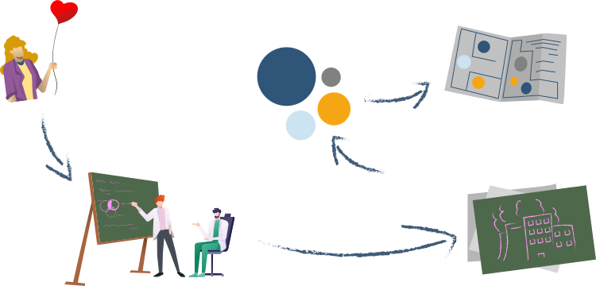

TÓPICO 3
O PAPEL DO GESTOR DA APS PARA APLICAÇÃO DE ESTRATÉGIAS DE PREVENÇÃO E PROMOÇÃO DA SAÚDE DE SEU TRABALHADOR
TÓPICO 3
O PAPEL DO GESTOR DA APS PARA APLICAÇÃO DE ESTRATÉGIAS DE PREVENÇÃO E PROMOÇÃO DA SAÚDE DE SEU TRABALHADOR
Clique em cada etapa para conhecer o processo de elaboração de um mapa de risco.
Sensibilização
Sensibilização
Círculos
Círculos
Mapa de riscos
Mapa de riscos
Oficinas
Oficinas
Método
Método
Sensibilização
A elaboração de um mapa de risco inicia pela sensibilização do gestor na relevância da iniciativa. Pode-se começar a análise pela priorização de alguns ambientes, tendo como critérios: o principal tipo de atividade desenvolvida no setor, o volume de trabalho caracterizado pela frequência de procedimentos e atividades realizadas ou utilização do espaço físico e a gravidade dos riscos envolvidos nos procedimentos.
Círculos
Logo após, é feita a avaliação dos riscos presentes em cada ambiente e a representação gráfica em um mapa esquematizado em forma de círculos, sendo que o tamanho do círculo está relacionado à classificação dos riscos, podendo ser grande, médio ou pequeno. Essa graduação do risco é feita pelos trabalhadores mediante a percepção consensual do grupo. Convencionou-se que os riscos são representados pelas seguintes cores: verde para os físicos, vermelho para os químicos, marrom para os biológicos, amarelo para os ergonômicos e azul para os de acidente.
Mapa de riscos
Por fim, o mapa de risco é fixado na entrada da sala ou em um local de fácil visualização, de modo que o trabalhador possa visualizar o mapa e a representação gráfica dos riscos antes de entrar no ambiente. Dessa forma, ele é alertado a respeito dos riscos presentes naquele lugar.
Oficinas
Em seguida, iniciam as oficinas de capacitação da metodologia de mapa de risco com participação dos integrantes CST. Essas oficinas são formadas por cinco encontros semanais, conduzidos por um especialista em saúde do trabalho, com experiência na elaboração de mapas de risco. A formação abordará conceitos básicos de saúde do trabalhador, acidente de trabalho, notificação
do acidente de trabalho, além de tratar da implantação de programas como o PCMSO, o PPRA, o Programa de Prevenção de Incêndio e o método a ser utilizado para mapear os riscos. É importante pensar em viabilizar esse treinamento por meio de parcerias com o Cerest-DF, a Subsaúde do GDF, a Fiocruz, a UnB, entre outros.
Método
Para a elaboração do mapa, deve-se utilizar um método que consiste na análise dos processos, das condições, da forma de organização, das cargas de trabalho, dos
materiais empregados e do uso do tempo (jornada, ritmos e pausas). Assim, a produção do mapa compreende a reconstrução e a análise do processo de trabalho, com informações sobre equipamentos, instalações, materiais, produtos, fluxos, resíduos produzidos, turnos de trabalho e atividades laborais.
Esse levantamento proposto é importante, pois permite que a equipe da CST compreenda a situação de saúde do trabalhador e forneça subsídios para a ação de análise ergonômica.